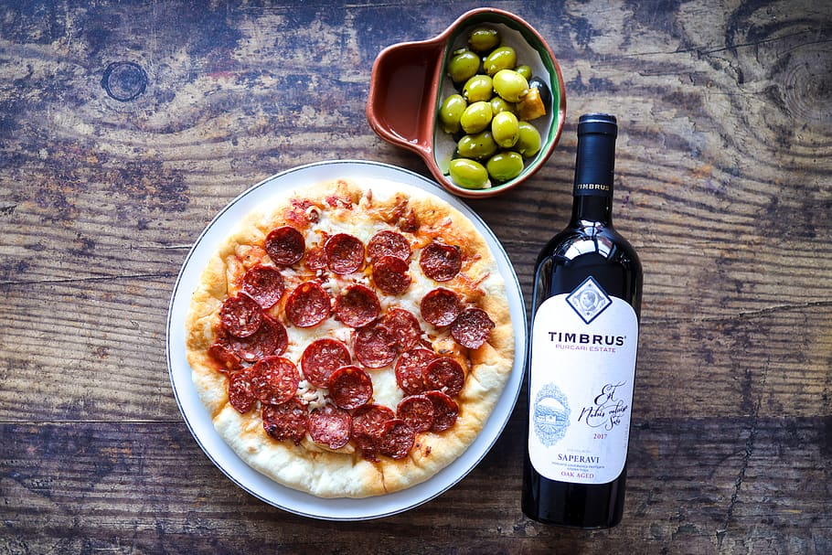

MEIST
Kokk olla on tore, sest siis saab palju maitsvaid roogasid teha ja uusi ideid katsetada.
Interneti sügavustest leidsin ühe vana pildi, kus on kokad peal. Selle pildiga käis selline tekst kaasa "Chefs look on as meat loaf, first dehydrated, then rehydrated, is cut for luncheon held March 11, 1943, at Hotel Statler, Washington, D.C., to commemorate second anniversary of lend-lease." Pildi leidsin siit.
EESTI KÖÖK
AASIA KÖÖK

ITAALIA KÖÖK